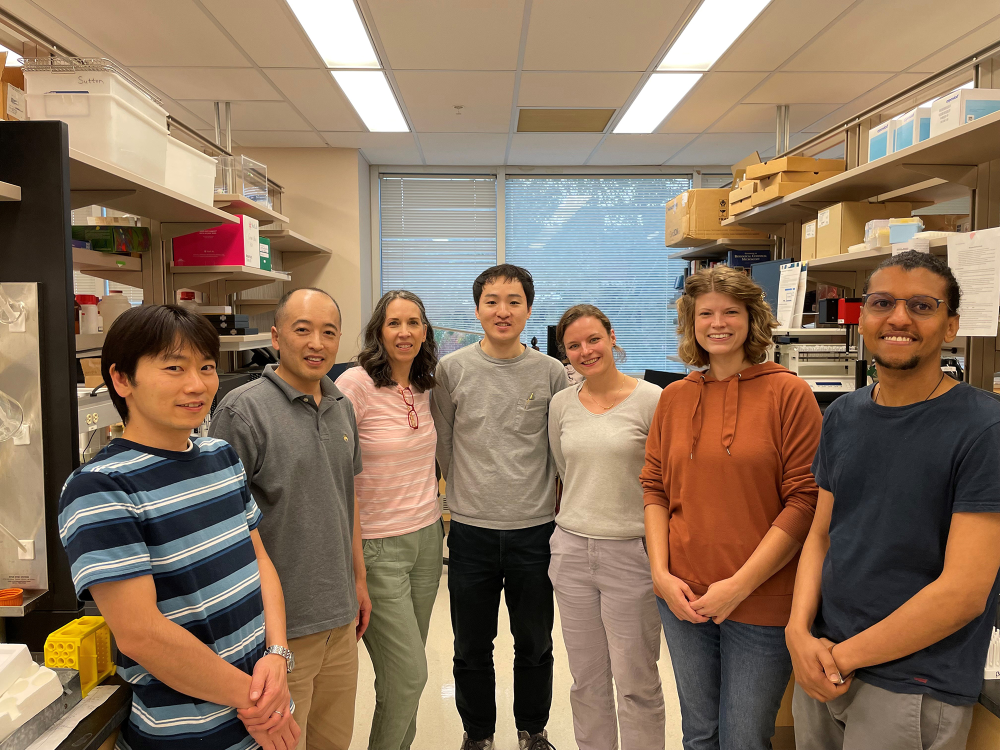
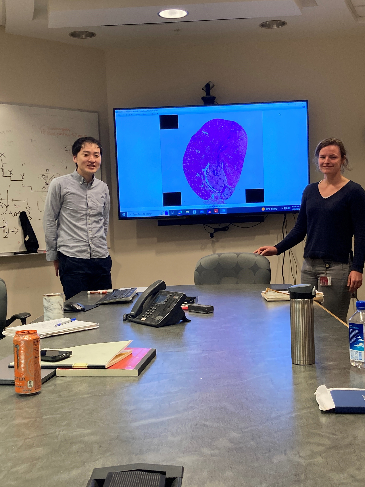
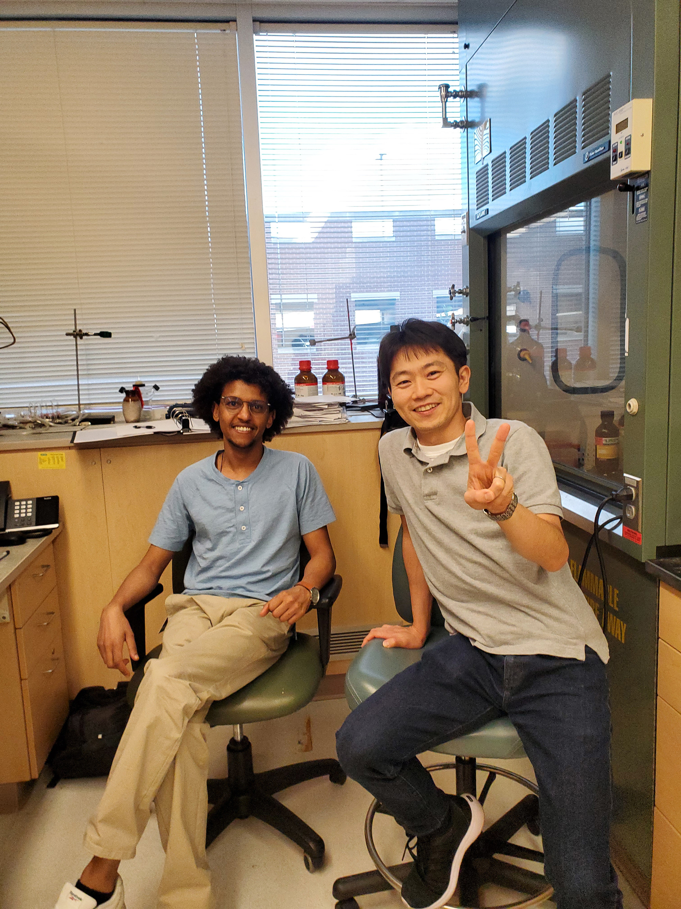
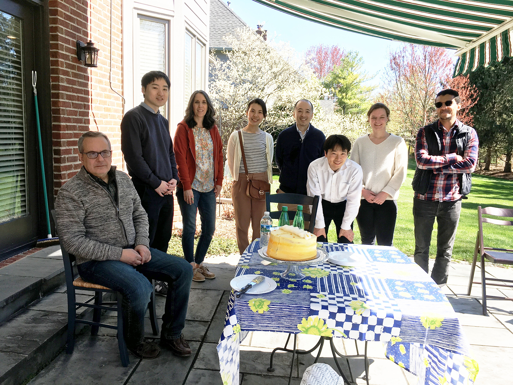
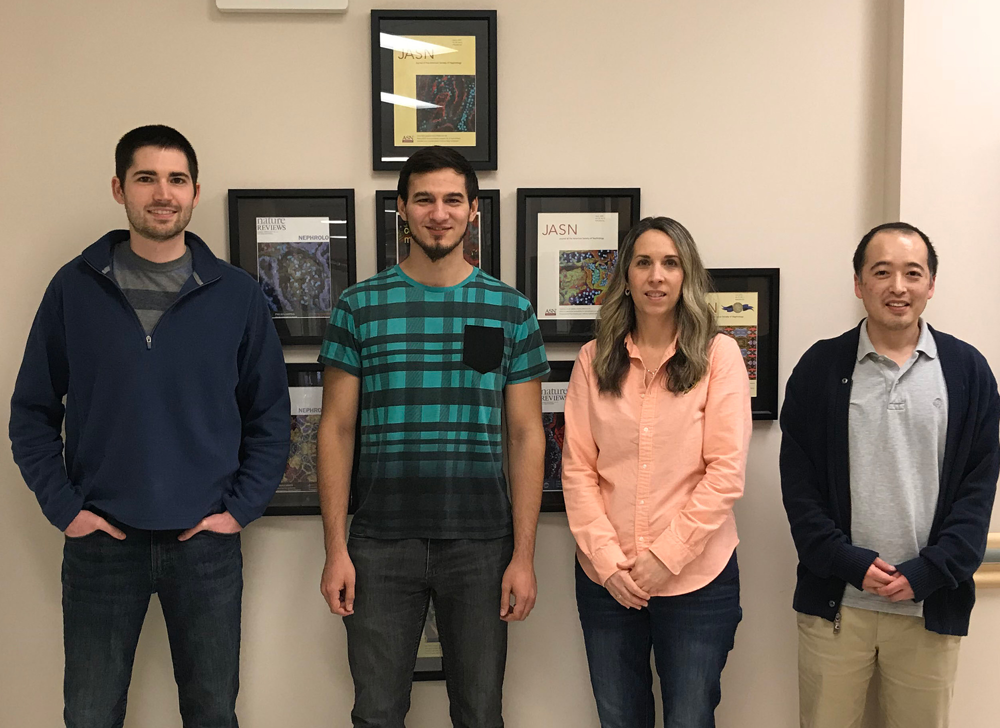
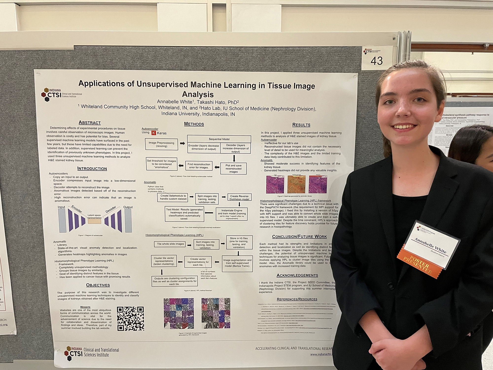

About the Hato Lab
Broadly, our research seeks to understand the remarkable plasticity and resilience of biologic systems, using the kidney as a model organ. Kidney injury can be devastating, yet under certain circumstances, the kidney activates adaptive recovery programs and restores function. Our research goal is to define these endogenous mechanisms of resilience and determine how they can be harnessed therapeutically.
One major focus of our laboratory is acute kidney injury during sepsis. Sepsis-associated acute kidney injury is a complex pathologic state that progresses at a fast pace. Our work has helped define the temporal evolution of this syndrome and identify molecular pathways that connect the initial inflammatory response to subsequent tissue recovery (Hato et al., JASN 2025).
For example, we have shown that bacterial sepsis elicits a robust antiviral-like response in the kidney, resulting in profound suppression of translation at a specific time point (Hato et al., JCI 2019, Kidwell et al., JASN 2023). These inflammatory cascades trigger the generation of endogenous double-stranded RNA, creating a cellular state that resembles viral infection. The resulting burden of self-RNA subsequently activates adaptive programs, including adenosine-to-inosine RNA editing and polyamine biosynthesis, providing a mechanistic link between early inflammation and recovery (Janosevic et al., eLife 2021, Heruye et al., JCI 2024).
To investigate these processes across molecular, cellular, and tissue scales, our laboratory combines advanced imaging, sequencing with custom library preparation, dual-species sequencing, genome editing, and RNA-based approaches, including ribosome profiling and antisense oligonucleotides (Hato et al., JASN 2017, Hato et al., JASN 2018, Uchida et al., JCI 2019, Saxena et al., Nature Commun. 2021, Nanamatsu et al., JCI 2025).
Our research has been funded by the National Institutes of Health (NIH) and the U.S. Department of Veterans Affairs (VA).

Research Opportunities – Join us
Infectious diseases remain a major and evolving threat to human health. Using the kidney as a model organ, our laboratory investigates how microbial signals shape tissue function, adaptation, and disease. The kidney is a highly specialized and physiologically complex organ, providing a powerful system for studying host–microbe interactions in health and disease. We are particularly interested in elucidating bacterial adaptation strategies within the inner medulla, the principal site of urine concentration and an underappreciated bacterial reservoir. With the highest osmolality in the body, the inner medulla constitutes an extreme microenvironment in which intense host-microbe interactions and competition occur. We employ a range of approaches, including bacterial and host genome editing, transposon mutagenesis, dual-species sequencing, and complementary functional assays, to dissect host and bacterial pathways at the molecular level.
Students and fellows joining the lab will gain hands-on experience with modern experimental approaches while developing a strong conceptual foundation in host–microbe biology, kidney physiology, and disease mechanisms. Our research program lies at the intersection of microbiology, molecular biology, and organ physiology, offering a collaborative and interdisciplinary training environment in which researchers can develop independent scientific questions and build toward successful careers in biomedical research.
Research opportunities are available at various career stages. We welcome inquiries from prospective students, fellows, and other scientists interested in our research. Please contact us directly by email at thato@iu.edu.

Principal Investigator
Dr. Hato is the Gilman-Brater Associate Professor of Medicine and Adjunct Associate Professor of Medical & Molecular Genetics at Indiana University School of Medicine and a staff physician at the Indianapolis VA Medical Center. He completed his postgraduate training in both Japan and the United States and subsequently pursued postdoctoral research while also working as a hospitalist and educator. He later joined the faculty at Indiana University, Division of Nephrology, where his laboratory investigates the molecular mechanisms of sepsis-induced organ injury and recovery, with the long-term goal of identifying new therapeutic strategies for organ failure. Dr. Hato has received several honors for his contributions to research and education, including the Indiana University Board of Trustees Teaching Award, Indiana University Department of Medicine Outstanding Early Career Investigator Award, and recognition as a Ralph W. and Grace M. Showalter Research Trust Fund Showalter Scholar. He is an elected member of the American Society for Clinical Investigation (ASCI).
Links
Research Team
- Amy Zollman, RVT, LATg (Lab Manager)
- Jered Myslinski, BS (Bioinformatician)
- Annie Long (PhD student, The Lilly Graduate Research Advanced Degrees Program)
- Shinichi Makino, MD, PhD (Postdoctoral fellow)
- Pierre Dagher, MD (Collaborator)
- Sayumi Otani, MD (Research analyst)
- Claire Mauer, BS (Research analyst)
Lab Alumni
- Caroline Martens MD, PhD (Visiting scholar; Nephrologist, KU Leuven)
- Nobuhiro Kanazawa, MD, PhD (Postdoctoral fellow; Nephrologist, Tokyo)
- Segewkal Hawaze Heruye, PhD (Postdoctoral fellow; Industry, FMC Corp)
- Annabelle White (Undergraduate at Johns Hopkins University)
- Jodi Yanagita, DO (Nephrology Private Practice)
- Ashley Kidwell (MD/PhD candidate at Texas A&M)
- Bernard Maier, PhD (Assistant Research Professor at IU Hematology/Oncology)
- Danielle Janosevic, DO (Assistant professor at IU Nephrology)
- S. Louise Pay, PhD (Writer/Editor)
- Shiv Pratap Singh Yadav, PhD
- Thomas McCarthy, PhD (Bioinformatician)
Rotation & Internship
- Maggie Mattek (University of Wisconsin)
- Ainee Martin (MD candidate at Penn State)
- Ester Par (High school student)
- Ryan Tsai (Purdue University)
- Madelyn Chadwick (DO candidate at Marian University)
- Arvin Halim, PhD (MD candidate at IU)
- David Rodriguez (PhD student at IU)
- Kevin Ni, MD, PhD (Endocrinologist at University of Colorado)
- Zain Siddiqui, DO (Marian University)
- Franziska Blender (University of Potsdam)
Lab Life







